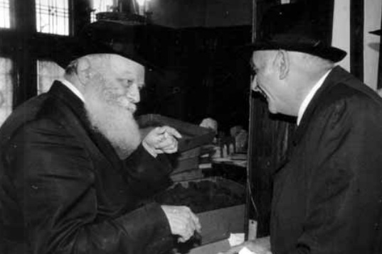

הרב הולנדר אצל הרבי א בניגוד למזג האוויר הקפוא ששרר באותו לילה במוסקבה, הרי שבתו
בניגוד למזג האוויר הקפוא ששרר באותו לילה במוסקבה, הרי שבתוך מסעדה לא–גדולה, אך נעימה, סמוך לבית הכנסת “מרינה רושצ’ה”, שררה אווירה חמה במיוחד. זה לצד זה ישבו עשרות בחורי ישיבות “תומכי תמימים” מאור יהודה, לצד אבותיהם, והתוועדו יחד עם רמ”י הישיבה וראש הישיבה הרב שלום דובער הכהן הענדל. ניגון רודף ניגון,

בניגוד למזג האוויר הקפוא ששרר באותו לילה במוסקבה, הרי שבתוך מסעדה לא–גדולה, אך נעימה, סמוך לבית הכנסת “מרינה רושצ’ה”, שררה אווירה חמה במיוחד. זה לצד זה ישבו עשרות בחורי ישיבות “תומכי תמימים” מאור יהודה, לצד אבותיהם, והתוועדו יחד עם רמ”י הישיבה וראש הישיבה הרב שלום דובער הכהן הענדל. ניגון רודף ניגון, שיחת חיזוק נוספת כהכנה לקראת המשך נסיעתם לרבי מה”מ.
מצב הרוח של כולם היה מרומם. נסיעה זו של תלמידי הישיבה, היא למעשה גולת הכותרת של מבצע תורה ייחודי שנערך בישיבה במחצית השנה האחרונה. החלום שעבורו עמלו התמימים בלימוד ובשינון בלתי פוסק, מתגשם ממש כעת. הנה הם נמצאים בחניית ביניים במוסקבה, וכבר מחר ימריאו צלחה בטיסת ‘איירופלוט’ היוצאת משדה התעופה ‘שרמטייבו’ שבמוסקבה לשדה התעופה על שם ‘קנדי’ בניו יורק, בואכה חצרות קדשנו.
בערך ב–1 בלילה, כששלהבת ההתוועדות בערה במלוא עוזה, נכנס למקום הרה”ח הרב בערל לאזאר, שליח הרבי ורבה הראשי של רוסיה. זה עתה שב הרב לאזאר מנסיעה די–ארוכה אל העיר אוריול, שם התקיימה חגיגה גדולה של הכנסת ספר תורה. חגיגה שאינה אלא הזדמנות נוספת לחבר את יהודיה של אוריול אל התורה הקדושה, אל ה’ייברסקי אובשינה’ ואל שליחו של הרבי מה”מ בעיר, הרב אלכסנדר גרישין. זו הזדמנות מיוחדת לחזק ולעודד אותו בשליחותו.
למרות שעות נסיעה מפרכות, ולמרות האירוע שכלל גם פגישה עם מושל המחוז ושאר חלקים רשמיים ובלתי–רשמיים, הרב לאזאר לא שב לביתו, אלא הגיע היישר אל ההתוועדות עם תלמידי הישיבה מאור יהודה. ניכר עליו כי הוא שש ושמח. כאן ביתו, כאן מבצרו - תלמידי התמימים. אין סימן של עייפות בעיניו, להיפך, הזיק החסידי השמח דולק ביתר שאת.
ב
הרב לאזאר פותח ומספר את חוויותיו מהנסיעה הארוכה ממנה הוא שב כעת. הוא מזכיר באריכות את דבריו של הרבי באותה שבת פרשת ואתחנן תנש”א, כאשר שלוחי המלך באירופה התכנסו לכינוס שלוחים ראשון ומיוחד לאחר נפילת חומות הברזל של רוסיה הקומוניסטית, כאשר הרבי עמד באריכות על מעלתו של הכינוס המתקיים דווקא במקום זה.
וכאן פותח הרב לאזאר ומספר:
אחד הרבנים הבולטים בארצות הברית היה הרב דוד הולנדר. הוא כיהן כמנהיג הרוחני של ה’היברו אליינס’ של ברייטון–ביץ’ וחבר באגודת הרבנים. במשך השנים זכה לקירובים רבים מהרבי, שתמיד האיר לו פנים.
על מקרה מיוחד שהיה לו עם הרבי, סיפר הרב הולנדר עצמו שנים ארוכות לאחר שקרה המקרה, וסיבותיו עמו.
היה זה באמצע שנות הלמ”דים. ברית המועצות אישרה באופן מיוחד את ביקורה של משלחת רבנים מארצות הברית שתבוא להתארח בקהילות היהודיות השונות ברחבי רוסיה. למרות המשטר הקומוניסטי שעדיין שלט שלטון ללא מצרים, היה לה לממשלת רוסיה ענין מיוחד בביקורה של משלחת הרבנים. בין הרבנים שנמנו על משלחת זו, היה הרב דוד הולנדר.
באגודת הרבנים בארה”ב ידעו היטב, כי אם יש מישהו בעולם שיודע באמת מה קורה בקהילות היהודיות ברחבי רוסיה, הרי זהו הרבי מליובאוויטש היושב בברוקלין אך מצודתו פרוסה עד לרוסיה הרחוקה. הרבי יודע פרטים מדויקים מה קורה בכל קהילה, מי הם אנשי הקשר, ובעיקר: כיצד אפשר לנצל את הביקור המיוחד הזה כדי לסייע לגולת יהדות רוסיה הדוויה תחת המגף הקומוניסטי.
הרב דוד הולנדר הזמין את עצמו ל’יחידות’ אצל הרבי, כדי לשוחח עמו בטרם ייצא לדרך המסוכנת.
לא הייתה זו הפעם הראשונה של הרב הולנדר ברוסיה הקומוניסטית. כבר בשנת תשט”ז נסע לראשונה במסגרת משלחת רבנים לבקר את יהודי רוסיה. היה זה לאחר מות סטאלין ועליית חרושצ’וב לשלטון. השלטון הרוסי שרצה להתקרב מעט אל המערב, הרשה את ביקור המשלחת. כבר אז, בטרם יצא לדרך המסוכנת, התייעץ הרב הולנדר עם הרבי, שהורה לו להיזהר מאד בדבריו בפני יהודי רוסיה. הרבי הסביר לו, שאם לו הדברים לא יזיקו, בהיותו אזרח אמריקאי, אבל היהודים השומעים יכולים להינזק מדיבורים לא אחראיים. כמו כן הורה לו הרבי, שאם חסידים ירצו להיפגש עמו, יש לערוך את הפגישות בזהירות רבה.
מאז אותה נסיעה, נסע הרב הולנדר לבקר את יהודי רוסיה עוד שבע פעמים, פעמים לבדו ופעמים במסגרת משלחת רבנים.
זו הסיבה שלקראת הנסיעה הנוספת שהתקיימה בשנות הל”מדים, שוב נכנס הרב הולנדר ליחידות כדי לקבל הדרכה. היחידות התקיימה במשך שעה ארוכה, ואיש לא יודע מה דובר בה, אלו הדרכות קיבל הרב הולנדר, ומה הוטל עליו לפעול בנסיעה זו, כמובן מתוך חשאיות יתרה.
המשלחת אכן יצאה לדרכה, וביקרה במספר קהילות יהודיות. הרבנים עצמם ידעו כי עינם הפקוחה של אנשי הק.ג.ב. לא יורדת מהם אף לא לרגע, והם התנהגו בהתאם. ועם זאת, הרב הולנדר הצליח בדרכים מתוחכמות ליצור קשרים ולהעביר מסרים למי שהיה צריך.
בתום נסיעה ממושכת חזרה משלחת הרבנים לארצות הברית, והפעם, כמו מובן מאליו, שוב נכנס הרב הולנדר ליחידות בקודש פנימה כדי לדווח לרבי את מה שראה ושמע. כמו כן מסר דרישות שלום מאת יהודי רוסיה שביקשו זאת.
לקראת תום היחידות, היסס הרב הולנדר לרגע קל, ואז אמר לרבי מתוך הערכה עמוקה: “הרבי הרי יודע כל אשר נעשה ונשמע בקרב יהודי ברית המועצות, ואין דבר שנעלם ממנו. מכל מקום, אם יורשה לי, אבקש לתת עצה שלעניות דעתי כדאי ליישמה”.
הרבי נענע בראשו הקדוש לאות הסכמה, והרב הולנדר פתח ואמר: “במפגשים השונים שלי עם הקהילות היהודיות, הבחנתי כי בבתי הכנסת ישנם עשרות ומאות ספרי תורה עתיקים רבים שמונחים כאבן שאין לה הופכין, חלקם עדיין בארון הקודש וחלקם נמצאים במחסני בית הכנסת. מובן מאליו שבבתי כנסת אלו, שבקושי יש בהם מניין, אין כמעט שימוש בספרי התורה, והרי הם מונחים ללא צורך. על כן, הייתי מציע אפוא, אם אפשר לגרום לאנשים המבקרים ברוסיה, שיוציאו עמם ספרי תורה ויביאו אותם לקהילות יהודיות בארצות הברית, באירופה או בארץ ישראל. כך הרווח יהיה כפול - ספרי תורה אלו ייגאלו משיממונם, וגם הקהילות היהודיות בעולם המערבי יוכלו ליהנות מספרי תורה רבי–ערך שאינם בשימוש כלל ועיקר”.
באותו רגע בו סיים הרב הולנדר לשטוח את עצתו, פניו של הרבי השתנו לגמרי. הוא לא יכול היה שלא להבחין בחיוורון עז שננסך בפניו של הרבי. הרבי מיקד את מבטו בקיר ממול, וכמו התנתק לגמרי מן החדר וממי שיושב מולו. שקט עמוק שרר בחדר למשך שתי דקות שנדמו לרב הולנדר כנצח. הוא כבר התחרט על דבריו, והבין כי עלה מבלי משים על נקודה רגישה ביותר. היה ניכר במוחש כי הרבי אינו נוכח כלל בחדרו, וכי הוא נמצא במקומות אחרים.
לפתע ‘הקיץ’ הרבי משרעפיו והחזיר את מבטו אל היושב מולו.
“אם אתה שואל אותי”, אמר הרבי לאיטו, בנימה נחושה, “הרי שאני אומר לך בדיוק הפוך! לא רק שלא צריך להוציא את ספרי התורה מרוסיה, אלא אם הייתי יכול, הייתי אומר לסופרי הסת”ם להכין עוד ספרי תורה בשביל יהודי רוסיה. יבוא יום ובו יהודי רוסיה יזדקקו ליותר ויותר ספרי תורה מכפי שיש כיום”.
לשונו של הרב הולנדר נאלמה דום. הוא לא ציפה לתשובה כזו. הוא האיש אשר הסתובב מספר פעמים בקרב קהילות רוסיה; הוא אשר הרגיש מקרוב את המגף הדורסני של הקומוניסטים הדורס בגסות כל סממן יהודי; הוא אשר ראה מקרוב את זיק הפחד שניצת בעיניהם של יהודי רוסיה כל אימת שפנה למי מהם ושוחח עמם - ידע כי דבריו של הרבי אינם אלא חלום רחוק שלא יתממש לעולם.
מפני כבודו של הרבי, שתק הרב הולנדר ולא גילה את מחשבותיו הצפונות.
לאחר שנטל ברכת פרידה, יצא בדחילו מעם הקודש ונסע לביתו.
בשעות ובימים הבאים שיחזר שוב ושוב את מהלך היחידות, כאשר במחשבתו עלו בעיקר דבריו של הרבי על אודות עתידם של יהודי רוסיה. הוא הכיר את הרבי כגאון עולם, כמנהיג דגול, וכמצביא מספר אחת; אך הפעם, כך חש, הרבי שגה בהשערתו לגבי עתידה של יהדות רוסיה. כמה שאהב את הרבי והעריץ אותו, הוא חש כי הפעם הרבי הגזים. “החלטתי ביני לבין עצמי”, כך סיפר כעבור שנים רבות, “שכדי לשמור על כבודו של הרבי, לא אגלה את דבריו לאיש, ואקח עמי אל הקבר את נבואתו זו”.
כעשרים וחמש שנים חלפו מאז. מדינות חבר העמים עברו טלטלה הגונה, מסך הברזל נפל, והחופש שב לשרור בקרב אזרחי רוסיה, ובכללם יהודי רוסיה שקיבלו אישור לשקם מחדש את חיי היהדות בכל הערים, הגדולות והקטנות. שלוחי הרבי החלו להגיע בזה אחר זה לעריה המרכזיות של חבר–העמים והחלו להחיות מחדש את היהדות בקרב מאות אלפי היהודים שכמהו וצמאו לזיק יהודי גלוי.
רק אז, כשהיהדות החלה פורחת מחדש, פתח הרב דוד הולנדר את סגור לבו, וסיפר לראשונה על אותה יחידות מיוחדת לה זכה, ואת דברי הנבואה השמימיים שאמר לו הרבי באותה שעה. “כשאני רואה עכשיו את התממשות נבואתו של הרבי, אני מבין שגם הפעם הרבי לא טעה, ורוח ה’ דיברה מגרונו”, הוסיף נפעם. “כל מה שהרבי אמר לי, התקיים במדויק, ואף מילה לא נפלה ארצה”.
ג
סיים הרב בערל לאזאר את סיפורו באוזני התמימים, ואמר: “פעמים רבות שאני מוזמן להשתתף באירועים כמו אלו שהשתתפתי היום - הכנסת ספר תורה. אני מכיר מקרוב את פועלם של השלוחים ברחבי רוסיה, ואני חושב שהגוף היהודי כיום שקונה הכי הרבה ספרי תורה בעולם - הרי זו יהדות רוסיה. כמדומני שאין שבוע שאין בו חגיגת הכנסת ספר תורה. דבריו של הרבי קלעו אל השערה”.
התמימים, תלמידי “תומכי תמימים” באור יהודה, ישבו מרותקים לדברים.
אחר שתיקה ארוכה של יישוב הדעת, פצח אחד מהם בניגון של התוועדות, אולם הרב לאזאר הרים את ידו בבקשו להוסיף עוד משפט: “אנו כחסידים יודעים, כי הרבי לא רק ניבא וראה למרחוק את העתיד, אלא הוא בכוחותיו השמימיים, יצר את המציאות שאותה אנחנו פוגשים היום. וכשם שנבואתו של הרבי התקיימה במדויק בנושא זה, אין לנו ספק כי גם נבואתו ‘הנה הנה זה משיח בא’, ו’כבר בא’, תתקיים במדויק בקרוב ממש”.